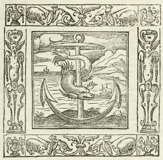

Nulla res est sub sole, quae materiam Emblemati dare non possit.
“Нет такой вещи под Солнцем, которая не могла бы дать материал для эмблемы”. (Богуслав Бальбин)
Обещал продолжить список названий кораблей Азовского флота, но понял, что не до конца разъяснил (себе и другим) смысл девизов, эмблем, символов, связанный с названиями кораблей. Раздел ономастики, который изучает собственные имена кораблей и судов, у нас еще не устоялся. Даже нет для него собственного названия. Различные исследователи предложили для этого термины карабонимика (Алексушин Г.В.), каронимика (Крючков Ю.С.), наутонимика, …Поэтому не будем углубляться в «ученые» споры по этому вопросу и рассуждения о приоритетах, рассмотрим лишь самое для нас интересное.

Гравюра из книги А.Альчиато Emblemata
В Средние века девизы были широко распространены. Невозможно представить себе рыцаря без девиза на щите. На турниры рыцари являлись не под своими именами, а под девизами, скрывавшими их имена и в то же время заменявшими их. Однако особенно широкое использование девиз получил в эпоху Ренессанса. Этот феномен подробно исследовал в своей статье «Печать недвижных дум» знаток того времени, автор множества книг и статей по русскому и западноевропейскому романтизму, истории европейской поэтики, а также культуре Средневековья А.Е.Махов. Девизы, сочиненные в эпоху Ренессанса и сразу после нее, входили в поговорку, неоднократно повторялись в работах историков. Честолюбивое "Aut Cesar, aut nihil" ("Цезарь, или ничто") — это Чезаре Борджиа; столб с надписью "Plus oultre" (старофранцузский вариант латинского «Plus ultra» ("Дальше" — то есть за край мира, за Геркулесовы столбы, отмечающие в античной мифологии границу мира) — это Карл V, правивший различными странами и колониями и вынашивающий замысел "мировой христианской державы". В этом же ряду — девиз ордена Подвязки ("Пусть будет стыдно тому, кто плохо об этом подумает" — "Honi soit qui mal y pense"), девиз ордена иезуитов ("К вящей славе Божией" — "Ad majorem Dei gloriam"). Некоторые девизы донесли до нас афористически оформленные слова, произнесенные в переломные моменты истории: "Пей свою кровь, Бомануар, и твоя жажда пройдет" ("Bois ton sang, Beaumanoir, ta soif passera") — этот девиз носил один французский дворянский род, запечатлев слова своего основателя, произнесенные в разгар знаменитой "битвы тридцати" (1351 г.).[ (с) Махов.]
В XVI столетии девизы имели рыцари и придворные, кондотьеры и прелаты, короли и их жены; папа римский Клемент VII, в годы понтификата которого появилась комета Галлея, наделавшая много шума, избрал своим девизом "Сandor illaesus" - "Неуязвленная чистота" с эмблемой «хвостатой звезды». Девизы можно обнаружить где угодно: на оружии (традиция "говорящего оружия" — "les armes parlants"), одеждах, шляпах, даже кроватях: так, Мария Стюарт выткала серию девизов на портьерах парадного ложа в королевских покоях.
Не удивителен поэтому интерес Петра к девизам и эмблемам. Этот интерес отразился и в издании известной книги «Символы и емблемата», о которой мы говорили выше, выпущенной в Амстердаме (1705) по специальному заказу Петра. У этой книги было много предшественников. Не будем перечислять их всех, остановимся кратко на некоторых, так или иначе связанных с нашей темой.
В 1499 году в венецианской типографии Альда Мануция анонимно вышел роман Hypnerotomachia Poliphili (Сон Полифила, Любовное борение во сне Полифила), написанный на смеси итальянского и латыни. Имелись в романе также фрагменты на древнееврейском, греческом и арабском языках и иероглифы. Текст украшали ксилографии. О них можно судить по их факсимильному изданию в 1889 г. Эту книгу называют также романизированным архитектурным трактатом. Помимо множества зашифрованных сведений об авторе романа (считается,что им был Франческо Колонна), интерес представляют бесчисленные археологические достопримечательности, которые встречаются во время путешествия Полифила на остров Киферы, к источнику Венеры. Все эти храмы, колоннады, жертвенники полвека спустя появятся на эмблемах. Расшифровка и толкование символов и надписей, которыми занимается Полифил, а также запись новых текстов посредством идеограмм послужили в дальнейшем фундаментом для создания новых символов.
Для меня самым интересным в этом трактате было объединение известного античного знака дельфина, обвившегося вокруг якоря, который встречался еще на монетах эпохи Флавиев, с не менее известным выражением Festina lente (Спеши медленно), которое связывают с императором Октавианом Августом. Ф. Колонна, увидев в дельфине воплощение стремительности, а в якоре — символ медленности, соединил то и другое, истолковав древний рисунок как парадоксальное сближение понятий: быстрота, обвившаяся вокруг медленности. Несколько измененная эмблема – в композицию еще включено весло, включенная в амстердамское издание 1705 года «Символы и емблемата», была определена для 62-пушечного корабля «Дельфин», спущенного в 1703 году на казенной верфи в Воронеже; девизом корабля стало : «Ничто же безъ совѣта». Этот девиз – «(Не делай) ничего без совета» - отличается от приведенного выше, но если не придираться к словам – смысл девиза сохранен. В «чистом» виде эмблема встречается в амстердамском (1705г.) издании под номером 489, девиз ее в русском переводе дан как «Спеши да с разумом».
Следующим этапом можно считать появление книги итальянского юриста Андреа Альчиато (лат. - Andreas Alciatus, итал - Giovanni Andrea Alciato) Emblemata («Книга эмблем»), (1531г.). Книга имела ошеломительный успех и породила целый вал литературы, посвященной этой теме. Правда, не все исследователи высоко оценивают эту работу. Так, американский историк Эрвин Панофский считает, что для Альчиато «главной задачей … было намеренно усложнить все простое и окутать туманом все очевидное там, где средневековая изобразительная традиция стремилась упростить все наиболее сложное и прояснить все запутанное и трудное». (Перевод В. В. Симонова). Но все же нельзя умалять роль Альчиато. Ведь даже само слово "эмблема" ввел в широкий оборот именно Альчиато. Он заимствовал это слово, по-гречески означающее "выпуклое украшение, инкрустация", из "Adnotationes in Pandectarum libros" (Париж, 1508) Гийома Буде, прекрасно понимая, что «берет греческое слово в переносном смысле, что обозначает этим словом нечто иное и новое.» (А.Е.Махов).
Несколько слов о том, чем различались эмблемы и девизы. Сейчас мы понимаем эмблему как собственно рисунок, а девиз — как подпись под ним. Однако некоторые специалисты считаю это неправомочным упрощением.. В представлении человека эпохи XVI-XVII веков и эмблема, и девиз состоят из текста и рисунка, и то и другое относилось к смешанному искусству picta poesis. Обе стороны эмблематики неразрывно связаны, как "душа" и "тело".
Вернемся теперь к изданию книги «Символы и емблемата» (Амстердам, 1705). Из материалов о жизни Петра известно, что в 1698 г . он дал амстердамскому типографу Тессингу привилегию сроком на 15 лет на право печатать для России книги, и торговать ими: «...повелели ему в том городе Амстердаме печатать европейские, азиятские и америцкие земные и морские карты и чертежи, и всякие печатные листы и персоны, и о земных и морских ратных людехт математические, архитектурские и городостроительные и иные художественные книги на славянском и голанском языке вместе, также славянским и голландским языком порознь по особну... кроме церковных славянских греческого языка книг...» После смерти Тессинга в 1701 г . привилегия перешла к Генриху Ветстению (Wetstenium), который и издал книгу при помощи Ильи Федоровича Копиевского (иногда его называли Копиевич). Любопытно, что на титульном листе книги Петр был назван императором, хотя еще не являлся таковым в 1705 г.
«Символы и емблемата» — единственное из русских изданий, напечатанных в Амстердаме, о котором известно, что оно продавалось в Москве. Тираж книги составлял не менее 800 экземпляров. Книги были привезены в Москву в ящиках, которые «поставлены в Посольском приказе при боярине Федоре Алексеевиче Головине». Когда Головин умер, о книге просто забыли, а вспомнили лишь через 12 лет. В 1718 г. дано распоряжение за подписью Г.И. Головкина и П.П. Шафирова: «...марта в 21 день по указу великого государя . . . Петра Алексеевича. .. вышеупомянутые книги Эмблематы. которые целы, отдать в книжной ряд купецким .людям при старосте с распискою, и велеть им те книги продавать охочим людем, а цену постановить всякой книге по двадцати по три алтына но две денги. . . и о том в книжном ряду выставить письменное объявление». Некоторые купцы отказались принять большое число книг к себе в лавки для продажи, брали только незначительное число экземпляров «Символов и емблемат» и торговали ими подьяки. Деньги за проданные книги отдавались в Посольский приказ.